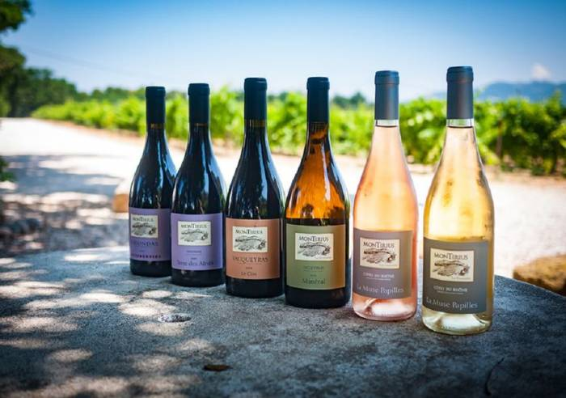

<
Gigondas is a French wine Appellation d'Origine Contrôlée (AOC) in the southern Rhône wine region of France. It is primarily a red wine region, with a very small amount of rosé wine produced. No white wines carry the Gigondas appellation. Considered a little brother to Châteauneuf-du-Pape, the wine is moderately prestigious and can age well when treated with care.[1] Gigondas AOC wine is produced exclusively in the commune of Gigondas, in Vaucluse.
The name of the appellation is of Roman origin. Jocunditas means great pleasure and enjoyment in Latin with the town being founded as a recreational site for the soldiers from the Roman Second Legion. The finding of a Bacchus-head indicates that wine was already grown at this time. Later the fields went to the church and later still, one finds the Prince of Orange to be a large land owner in the area. As early as 1894 the wines from the region won a gold medal at the agricultural fair in Paris. But until the beginning of World War II, the wines were used as reinforcement to thin Burgundies. In 1956, a bitter winter caused the production of wine to experience a renaissance, as the olive trees had died from the cold. In 1971 the appellation left the other Côtes du Rhône-Villages behind, and became a proper appellation in its own right.
In 1592, white wine from Gigondas is mentioned. However, no white wine is produced today. The appellation is growing red grapes only, and mostly making only red wine, though some rosé is also produced. According to the INAO, Gigondas Rouge is to be made from a maximum 80% Grenache, a minimum 15% Syrah and/or Mourvedre, and a maximum 10% from the other Rhône varietals, minus Carignan.[4] The greatest Gigondas’ can be kept for 10 years or more in the cellar and usually benefits from at least three years in the cellar. Being primarily Grenache does, however, mean that the lesser wines are not recommended for extended bottle aging.
Gigondas, along with the rest of Southern Rhône has a Mediterranean climate that differs from its northern neighbour, which has a more continental climate. The main geographical feature in Gigondas is the Dentelles de Montmirail, a small range of mountains that divide the appellation into two distinct areas – one with a cooler climate and one with a hotter. But elevation is also an important factor, as wine is being harvested as high as 600 meters.